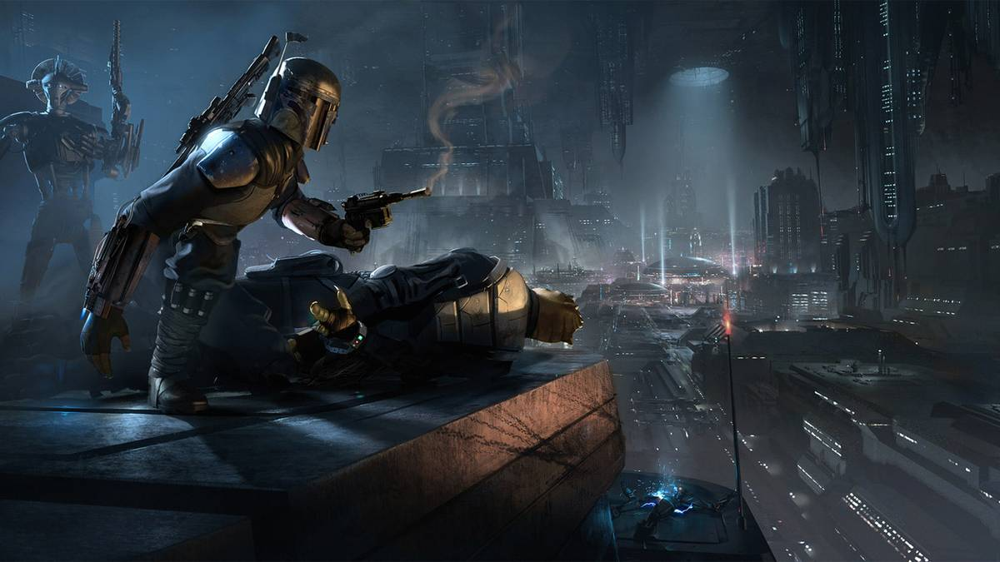

Gaming · 07 Nov 2026
10 Devastating Game Cancellations That Are Still Disappointing Years Later

Canceled games are nothing new, but 10 exciting games were taken out of action before they could deliver on their promise.
Multiple independent publishers are reporting on the same development: 10 Devastating Game Cancellations That Are Still Disappointing Years Later.
The available reports place the development in the Gaming category. The accounts were compared for agreement on the central event rather than simply shared names or broad topics.
One of the available reports describes the development this way: Canceled games are nothing new, but 10 exciting games were taken out of action before they could deliver on their promise.
Readers should consult the linked source reports for additional context, updates and details that may change as the story develops.
Sources
This article was produced by the C. O. Eric AI Newsroom from the cited sources. It is published only after automated evidence and safety checks.